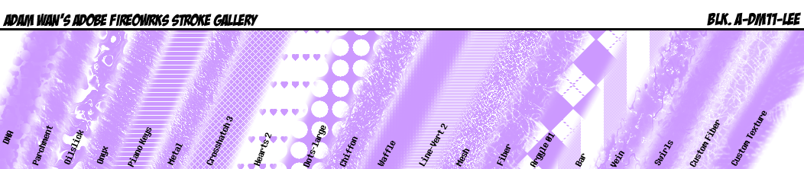
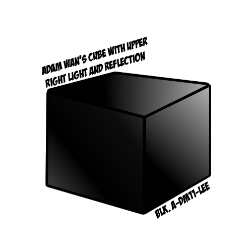
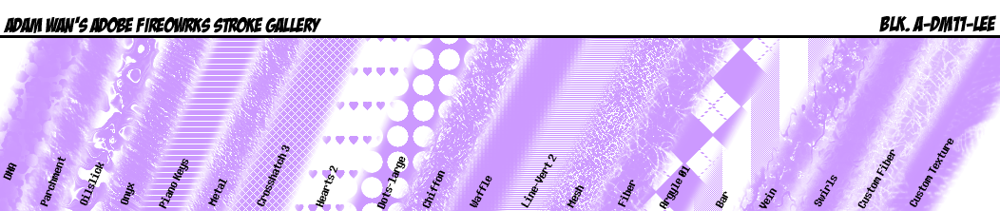
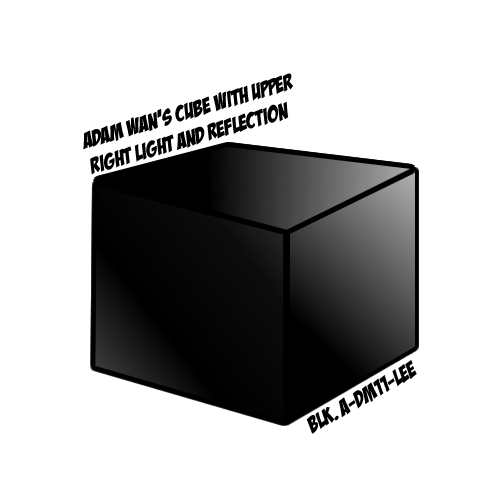

(/◕ヮ◕)/*:･✧ Adam's Portfolio ✧･: *ヽ(◕ヮ◕ヽ) |
|
Other Projects
Digital Animation Portfolio
Wait what? A portfolio in another portfolio? That’s unheard of! Anyway, this was a Digital Animation portfolio put together in Adobe Premiere Pro. This assignment tested for basic video editing and sound addition, both of which I am extremely familiar with. I spent a lot of time working on this, since I may potentially be using this in the future.
Fireworks Strokes, Fills, and a Cube
 



The Fills assignment was an Adobe Fireworks project that tested my skills with handling Adobe Fireworks’ pesky colour and pattern selection system. I created a grid to demonstrate different kinds of fills, a gallery to display different kinds of strokes and stroke patterns, and a cube that has lighting and gradients.
PaintTool SAI Eye Tutorial
This Anime Eye tutorial was created with Active Presenter’s screen recording software, Adobe Premiere Pro’s video editing, and PaintTool SAI’s art software. I was tested on how well I can give directions and how well I can draw anime eyes. My experience as a former YouTuber allowed me to complete this tutorial with ease, but I feel like it can be improved upon.
HTML Basic Lists and Text
I love these colour combinations because of their synergy and harmony when put together. Often times I will use these when designing original art.
These are the ten Pokémon that have stood out to me in my journey through the Pokémon world. Clicking on the Pokémon names will link you to their respective Bulbapedia entries.
This is the code of a webpage forcefully inserted into the code of a bigger webpage. Well, at least that’s the most literal way you can interpret it. I was assigned to create a webpage using a text editor (I used Sublime Text). This webpage required creating two lists with 10 items each. I created lists of my favourite colour combinations and my favourite Pokémon. I also decided to take it a step further and include links to each of my favourite Pokémon’s Bulbapedia entry.
HTML Images, Links, and Tables
These are the ten Pokémon that have stood out to me in my journey through the Pokémon world. Clicking on the Pokémon names will link you to their respective Bulbapedia entries.
| Inkay | 
|
| Metagross | 
|
| Rayquaza | 
|
| Gourgeist | 
|
| Blaziken | 
|
| Ralts | 
|
| Flygon | 
|
| Giratina | 
|
| Gliscor | 
|
| Articuno | 
|
This is yet another cluster of html code shoved into this webpage’s html code. Like the previous html assignment, I used Sublime Text to write the code for this. What is different about this assignment was that I had to utilize links, images, and tables, all of which turned out successfully when I coded them in. This little webpage is a table with the names, pictures, and Bulbapedia links of my favourite Pokémon. Both this html project and the previous one were easy to create; not surprising for a basic html file.